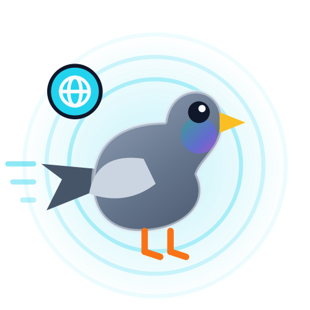

Client VPN desktop open source basato su WireGuard. C++17, Qt 6, interfaccia dark e un piccione disegnato interamente a codice.
Scarica il codice Come si compilaFull tunnel IPv4 + IPv6 (0.0.0.0/0, ::/0) con DNS, MTU, endpoint e chiavi configurabili.
Prova interfaccia, grafico e log senza root, senza rete, senza chiavi.
Stato, uptime, bitrate RX/TX in un grafico fluido, nodo di uscita e stato del kill-switch.
Dorme da disconnesso, sbatte le ali mentre si connette, calmo e radar quando è protetto.
Connetti, disconnetti ed esci dall'area di notifica, anche a finestra chiusa.
Linux, macOS e Windows con un unico codice CMake.
git clone https://github.com/vale-dev48/pigeonvpn.git cd pigeonvpn cmake -S . -B build -G Ninja -DCMAKE_BUILD_TYPE=Release cmake --build build ./build/bin/PigeonVPN
Servono CMake 3.21+, un compilatore C++17 e Qt 6.4+. Istruzioni per piattaforma nel README.
Solo il comando wg-quick up/down viene elevato.
Mai nei log, mai salvate nelle impostazioni; file temporaneo 0600 azzerato dopo l'uso.
Chiavi, indirizzi, DNS, endpoint e MTU controllati prima di generare la config.
Stato: progetto sperimentale. La modalità reale non è ancora stata collaudata su server WireGuard reali e il kill-switch automatico esiste solo su Linux. Contributi e revisioni di sicurezza sono benvenuti.